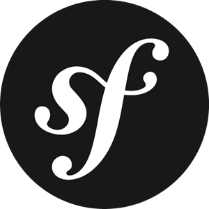
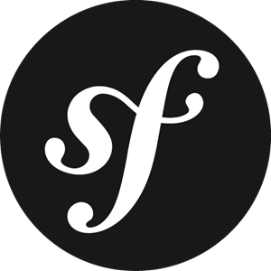

Bonjour ! Je suis Lucie
Etudiante à l'IUT de Lannion - DU Web
 Adresse: 1 Allée du palais de
justice, 22300 Lannion
Adresse: 1 Allée du palais de
justice, 22300 Lannion
Email: luciebrochet358@gmail.com
Téléphone: 07 52 64 84 39
Date de naissance: 14 mai 1997


Adresse: 1 Allée du palais de
justice, 22300 Lannion
Email: luciebrochet358@gmail.com
Téléphone: 07 52 64 84 39
Date de naissance: 14 mai 1997
Je m'appelle Lucie Brochet et je suis actuellement étudiante à l'IUT
de Lannion au sein de la formation DU Web.
Passionnée par
l'informatique, je me suis tournée vers le développement en 2019
avec une première formation de 6 mois qui a débouché sur un Titre
Professionnel.
Aujourd'hui, je suis à la recherche d'une entreprise en Bretagne pour un stage de juin à fin août rémunéré par la Région afin de valider ma formation et poursuivre les études en licence professionnelle en septembre 2020, en alternance.
Consulter le CV6 mois de formation:
5 mois de formation (700h):
Soutenance passée en janvier 2020, en attente des résultats.


 



O'Stan est un site communautaire pour éditeurs, illustrateurs ou auteurs qui souhaitent collaborer ensemble autour d'un projet. Grâce à O'Stan, un illustrateur pourra trouver quelqu'un pour écrire une histoire par exemple, tandis que lui dessinerait. Pour favoriser la mise en relation de ces différents métiers, quelques fonctionnalités ont été mises en place comme une messagerie instatannée, la possibilité de se connecter afin d'ajouter des annonces sur le site, un système de recherche par tag ou métier des utilisateurs ou une "gallerie" sur son propre profil permettant d'ajouter ses travaux, visible par les autres utilisateurs.
Le site à été réalisé tout d'abord en équipe de 4 pendant un mois, puis je l'ai continué individuellement afin de le présenter à mon Titre Professionnel en janvier 2020.
Technologies utilisées: Symfony, Mercure, Ajax, Javascript
Le Berceau du rat est un projet personnel, réalisé en autonomie et toujours en cours. L'objectif de ce site est de pouvoir répertorier au sein d'un même endroit les rats domestiques. Le but étant de refaire entièrement, sous Symfony 5 cette fois, le site "Le livre des origines du rat domestique" aka LORD, qui a vieilli même s'il fonctionne toujours et est d'ailleurs encore très très utilisé par la communauté.Ce site permets donc d'enregistrer des rats et des portées, mais égalements des "rateries" (Personnes qui reproduisent des rats). Ainsi, on peut obtenir l'arbre généalogique d'un rat, remplir sa courbe de poids, savoir les particularités de sa famille par exemple niveau santé ou autre. Chaque enregistrement génère un numéro d'identification par rat unique.
Technologies utilisées: Symfony, Javascript


Durant cet exercice réalisé durant ma formation à O'Clock, nous avions comme consigne de réaliser un Pokedex (une sorte de dictionnaire de créatures Pokemon) afin d'appronfondir le modèle MVC, MySQL et PHP.La base de données des pokemons était déjà fournies avec leur nom, type etc... L'application se compose donc de la page d'accueil avec chaque pokemon qui est cliquable et ramène sur sa fiche personnel avec les informations qui lui appartiennent (type, nombre de point de vie etc et une barre de statistique associée). En haut du site, nous pouvons revenir sur l'accueil en cliquant sur liste, ou voir tous les types de pokemons
Technologies utilisées: PHP, AltoRouter,MySQL, Bootstrap, Composer